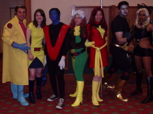

X-Men
 De: La Frikipedia, la enciclopedia extremadamente seria.
De: La Frikipedia, la enciclopedia extremadamente seria.
En esta imagen podemos ver a frikis pro-mutantes, vestidos para honrar a sus héroes, entre los cuales se reconoce a Cíclope, a Pícara, a Júbilo y a Fénix (por multiplicado). Todos ellos un poco descuidados después de su último rodaje X-MEN 3. Aún no hemos averiguado quien cojones se supone que son los otros
Los frikis por excelencia. Son gente que, como no mojan o son deformes, han decidido formar banda de casos perdidos. Su objetivo claramente es dominar el mundo con una arma muy chunga denominada transfuncionador del continuo, cuyo misterio solo es superado por su poder (hay rumores de que este arma se trata del mismiso Chuck Norris en persona). Esto obviamente no es bueno para el ciudadano de a pie ni para el Govierno, asi que no debemos tener pena. La pena les hace mas fuertes y mas frecuentes en nuestra vida cotidiana, empeorandola considerablemente. Aún así hay civiles romáticos que les apoyan y les sostienen, aparecen ONGs que les mantienen (veáse la imagen de grupo de la derecha donde se puede ver lo bien que les mantienen). Contra estos civiles no podemos hacer nada sin causar una guerra nuclear porque estan perfectamente distribuidos según una distribución normal no uniforme por todo este maldito planeta y parte de la constelación de Orion. Deberiamos trucar el colisinador de hadrones para cargarnoslo todo y hacerlo coincidir con una reprogramación de Cyberdyne para que haga caer en el mismo segundo todas las cabezas nucleares construidas sobre la superfície de los países que las sostienen. Seria una putada darse cuenta después de que hemos sobrevalorado los superpoderes de los X-Men y que no era para tanto. Hay quién dice que después de la gran implosión solo quedaran las cucarachas, los escorpiones, los X-Men y -como no- Chuck Norris.
Historia
Al principio de todo, estaba Bruce Lee. Ni motor inmovil ni leches. Chuck Norris creó a Diox y Diox creó a su imagen y semejanza a los X-Men. Escondiéndolos entre los civiles de a pie y haciendolos invisibles a los radares doppler de superfície. Los X-men, o mejor conocidos como los "fenómenos" son un grupo de seres anormales con diversos poderes que quieren hacer al mundo de un color patito patito color de café. Su lider es un pelón bueno, llamado Michael Jordan, él tiene la habilidad de hacerce largo a su gusto (vease en la película Space jam) además puede jugar con muñequietos con un tutu.
- La conquista Árabe de la península ibérica (a los mutantes con alteraciones, les encaragaron vigilar el Guadalete y en la percepción del espacio no encontraron el lugar. Todavía se les busca, se creen que se han escondido con Bin Laden).
- La creación de El Vaticano (luego les echó la Iglesia)
- La caída del muro de Berlín.
- La creación de la marca el gaitero.
- La tercera reencarnación de Ratzinger Z
Después de muchos desastres, los mutantes decidieron reunirse y plantar cara. Crearon una banda (Coalición Canaria)liderada por Juan Carlos de Borbón para defenderse, pero las diferencias entre los miembros provocaron la creación de otra banda, el ERC, al cuyo frente se destacó Carod. Se cree que el primer grupo se ha hecho fuerte en el país de Espiña , mientras que el segundo fue casi destruido al aliarse con Mecha Hitler , Ratzinger Z y El Yayo y perder en la batalla. Actualmente gobiernan a la sombra en Cataluña.
Mutantes famosos
 De izquierda a derecha: Júbilo, Kitty Pryde, Rondador Nocturno (conocido asi por la pandilla porque solo sale para salir de botellón), Pícara (es muy picantona la tia), Fénix, Goloso (se lo traga todo) y Tormenta.
- Magneto:Juan Carlos de Borbón, cuyas dotes de atracción de metales le han provocado muchos problemas en los aeropuertos.
- Charles Xavier: Mejor conocido como "Maestro Limpio" o "Rueditas"... su increible habilidad para engañar a los
adefecios idiotas mutantesingenuos asustados que creen que hay un lugar donde seran aceptados, cuando en realidad es para que entren a su estupido colegio y el se embolse una muy buena lana, de colegiatura. Los Mutantes que son huerfanos o que no tienen quien les pague la colegiatura, tienen cierta preferencia, hay algunos que dicen que cosas raras suceden cuando el y algun alumno van a hablar en privado.
- Scott Summers: Mejor conocido como: "Veranos". Este
pendejo hombre se hace la victima cada vez que puede recordandonos su mariconada de vida su tragica historia de como perdio a toda su familia y el hermano que le hacia los favores, cuando el se encontraba caliente. Ahora que se ha mudado a la casa del "Maestro Limpio", para entrenar y convertirse en un X-Men. Conoce a Juana Gris [de la cual hablaremos en unos instantes] y de ahi se queda colgado de ella. Se me olvido mencionar su pinche poder de fenomeno mutante, consiste en lanzar unos rayitos incoherentes por los ojos, y usa unos lentes rojos echos de imitacion de rubi.
- Jean Grey: conocida como, "Juana Gris". Una tipa a la que se le dice loka, pues aclama poder leer mentes y atrar objetos con la mente. Una vez que fue comprobado que si lo podia hacer, sus padres la encerraron en su cuarto, hasta que ella perdio la cabeza, despertando en su mente a
su puta interior el gran espiritu conocido como Ave Fenix. Maestro Limpio supo de esto y enseguida corrio al pueblucho donde esta niña vivia, al reunirse en "privado" con ella, el monstruo se encerro por mucho tiempo. Al llegar al instituto, Juana se fijo en el peor de todo el colegio, el que chillaba entrenaba todas las noches, Verano. Verano se enamoro instantaneamente de ella, sin embargo, ella solo lo veia a el para hacerle buenas malas bromas, quitandole los lentes o poniendole el pie para que tropezara.
- Ororo Monroe: Conocida como Tormenta, pero en los dias de tormenta es conocida como, "la tipa menopausica", que anda de un humor del carajo por que ha llegado a sus 50 y todavia no ha tenido su programa en intereconomia, ya que a lo mas lejos que ha llegado es la silla de esa cosa a la que llaman salvame.
- Wolverine:, Logan, Lobezno, Guepardo, Glotón, o el barbudo cara peluda que en realidad solo posee el poder de regenerarse, porque sus garras están hechas con kriptonita muy inestable.
- Rogue: Pícara, Titania, o Tetonia, porque la tía es muy picarona y tiene unas tetorras enormes. Te causa un orgasmo nomas con tocarte pero te mata en el proceso.
- Beast: El tio se llama Henry McCoy, le decían Hank cuando era un nerd cuatroojos pero se inyectó viagra para ponerse mas duro y tirarse a Mystique y de tantas pajas le salieron pelos en las manos, los pies, y todo el cuerpo y quedo como un mono peludo azul de tanto cascarsela pensando en Mystique.
- Gambit: El franchute del grupo. Se llama Remy LeBeu pero le dicen Gambito porque es un tramposo jugando a las cartas aunque el gambito es una jugada de ajedrez y no de las cartas, pero bueno, si hiciera trampa jugando al futbol le dirian Gambeta. El tio esta cachondo con Rogue y Jubilee y se las quiere tirar pero como no puede derrocha la calentura calentando naipes y practicndo salto con garrocha.
- Jubilee: Jubilación Lee es la hija de Bruce Lee que la tuvo cuando ya se había jubilado y por eso le puso ese nombre pero como es muy feo le dicen Jubilee. Tiene el poder de masturbarte tocandote las bolas con sus manos sacachispas y por eso Gambeta se la quiere tirar, pero ella no quiere porque nomas le tiene ganas a Wolverine.
- Nigthcrawler: Rondador Nocturno, porque le gusta andar de jarana por las noches para irse de botellón, es un demonio católico que aprendió a teletransportarse para fugarse del convento y salir de juerga a enfiestarse en todos los puticlubs que pueda.
- Coloso: Un gorila de discoteca que abusó de los esteroides combinados con pildoras de hierro y le terminaron saliendo laminas de hierro hasta en los huevos.
- Shadowcat: Gatita Orgullo es una putilla que atravieza las paredes y es la amante de Iceman, que le mete los cuernos a Pícara con ella.
- Iceman: Primo hermano del Silver Surfer, nomas que el surfista se puso plateado porque enfermó de argiria, en cambio éste se envolvió en hielo para bajar la calentura que tenia por aguantarse las ganas de coger porque no puede tirarse a Pícara porque si se la toca lo mata, y por eso termina metiendole los cuernos con Kitty Pryde.
- Pyro: Un pirómano enemigo numero uno de Iceman, en principio porque ni con sus llamas puede derretirle el hielo porque Iceman es mas poderoso, pero en realidad es porque el piromano esta caliente con la novia de Iceman pero como la tía es infollable morirá virgen y el pirómano se prende fuego de tan caliente que está.
- Angel: Un niñato que le salieron alas en el culo, digo, en la espalda, y por eso le dicen así, se ve que Stan Lee no tenia ganas de ponerse a pensar un nombre mas imaginativo.
- Angel: Si, tambien se llama igual pero esta es una tia, y se llama Angel Salvadore, y aunque la negra buenota es la hija de Lenny Kravitz, tiene alas de bicho y eso te hace pensar dos veces si en verdad quieres tirartela, a ver si todavia tiene otras partes de bicho (wakala). Se casó con un pajarraco y tuvieron 6 hijos que obviamente son unos engendros.
- Sabretooth: Victor Creed, enemigo numero uno de Wolverine. Fue producto de las relaciones zoofilicas entre un humano y un tigre dientes de sable, y le tiene envidia a Wolverine porque el tiene garras de adamantio pero Dientes de Sable solo tiene uñas de prostituta y un tapado de piel de chinchilla.
- Mystique: La tia buena de la saga. Si se hace llamar Mística es porque le gusta usar nombre de puta, asi que eso ya lo dice todo. Es tan puta que anda desnuda todo el tiempo para mostrar lo firme que tiene el culo. Se hizo un bodypainting azul y esta cubierta de escamas, por lo que suponemos que tiene psoriasis, pero a nadie le importa porque igual esta para matarse a pajas viendola a ella. Su poder es transformarse en cualquier otra persona, poder que quisieran tener todas las mujeres del mundo asi se transforman en cualquier mujer que desee su marido y asi evitan que le metan los cuernos.
- Sapo: Mutante fan numero uno de la Rana Gustavo y Sargento Keroro. Tiene la piel verde llena de manchas (otro que necesita un dermatologo) y la lengua mas larga que la de Gene Simmons.
- Lady Deathstrike: Japonesita que follaba con Wolverine cuando andaba de botellon por los puticlubs de Tokyo, hasta que Wolverine la dejo para buscar mas putas y entonces ella cobro venganza haciendose meter adamantio en los huesos para alargarse los dedos de las manos y cortarle las pelotas a Wolverine, cosa que logró pero le crecieron otras porque se regenera.
- Juggernaut: Hermanastro del profesor Carlos Javier, que como era humano y no tenia poderes leyo una antigua receta magica de esteroides anabolicos y se infló como gorila de discoteca y se puso una cacerola en la cabeza.
- Callisto: Lider de los Morlocks, mutantes subnormales que viven en las cloacas porque son feos y pobres. Aunque en los comics es una flaca anorexica marimacho sin tetas, en la pelicula es una mexicana buenota con unas tetorras bien golosas y un culo bien firme y por eso no vive en las cloacas y lidera a los Mutantes Omega, una banda de mutantes jebis.
- Emma Frost: La tipica rubia con tetas enormes, super puta y con culo de conejita playboy. Le dicen la Reina Blanca y es la mano derecha de Sebastian Shaw, y a la mano izquierda le dicen Reina Negra, asi que el hijoputa de Sebastian Shaw la pasa muy bien cuando se la cascan sus dos "manos" Emma es telepata se puede envolver en una armadura de cristal, obviamente para prevenir que la violen los demas miembros del Club Fuego Infernal.
- Selene: Tamien conocida como Selena Gomez, es la Reina Negra, otra de las putas cabareteras del Club Fuego Infernal. Tiene poderes psiquicos y de magia negra, y le puede chupar la energia a los hombres que seduce, aunque tambien les puede chupar el pene. Cuando no esta haciendo guarradas lesbicas con Emma Frost está chupandosela a Sebastian Shaw, pero a el no puede robarle energia porque él absorbe energía así que es inmune a los poderes de Selena y por eso ella se la puede seguir chupando (le hace caso a Maradona).
- Sebastian Shaw: Lider del Club Fuego Infernal, secta herética con nombre de puticlub, que viene a ser una especie de logia masónica pero integrada exclusivamente por mutantes. Tiene el poder de absorer energía y usarla para tener fuerza sobrehumana y retardar el envejecimiento y la eyaculacion, por eso puede hacer un trio con la Reina Blanca y la Reina Negra sin cansarse, pero como nadie es perfecto tenia que tener algun defecto: tiene un pésimo gusto para vestirse.
- Mister Siniestro: Mutante del siglo 19 que era un cientifico loco que hacia experimentos con vagabundos secuestrados en las calles de Londres y hasta desenterro el cadaver de su hijo para hacer experimentos, y despues termino haciendo experimentos con mutantes y por eso se hizo enemigo de los X-Men, o sea, es el tipico Dr. Frankenstein solo que en vez de crear un monstruo mas bien el mismo era el monstruo (y se pinta los labios como homosexual)
- Apocalipsis: Momia mutante de millones de años de antiguedad, especie de Tutankamon pero mutante. Se cree un dios y intenta dominar el mundo para probarlo, porque total es inmortal y tiene tiempo de hacer lo que le venga en gana. Hizo muchas maldades, como ayudar a Siniestro a modificar su gen mutante para volverlo inmortal y darle mas poderes, aunque de todas las cosas que hizo nunca pudo hacerse una cirugia plastica para corregir su fea boca de pescado podrido.
- Carod Rovira, que posee el poder de tocar los cojones en el Parlament y un crecimiento anormal de vello.
- Omega Rojo: Mutante soviético capturado por Banshee y entregado a la KGB, que querian hacer la version rusa del Capitan America pero como Capitan Sovietico sonaba cutre al final hicieron la version rusa de Wolverine pero como no tenian adamantium le pusieron carbonadium. Como tiene tentaculos metalicos de carbonadium puede violar muchas mujeres al mismo tiempo y por eso termino trabajando para Matsuo Tsurayaba en la creacion de manga hentai.
- Azazel: Demonio mutante teletransportante y padre biologico de Nigthcrawler. Cuando Mystique estaba casada con Wagner en Alemania le metio los cuernos con su mejor amigo (tipico) que era Azazel, y como Azazel es un diablo (y ya vemos por que) su hijo tambien salio siendo un diablo teletransportante pero en vez de rojo es azul porque heredo el color de Mystique. Tambien tiene la costumbre de follar con muchas mujeres para engendrar hijos con la excusa de que son su conexion con esta dimension para poder seguir teletransportandose, ciertamente el mas suertudo de la saga (y no lo digo por la teletransportacion)
- Riptide: Un esquizofrenico hiperactivo que se la pasa dando vueltas sobre si mismo hasta que genera un tornado y el remolino los mata a todos. Junto a la negra Tormenta es la pesadilla de los meteorologos.
- Alex Summers: Alejandro Veranos es el hermano de Ciclope. Mas conocido como Havok, Javoc, Caos, o Estragos, tambien lanza rayos laser pero a diferencia de su hermano en vez de lanzar rayos laser por los ojos los lanza por el culo, a perdon, por las manos, o por el pecho (es que en cada version lo hacen distinto).
- Banshee: Tiene nombre de un espiritu irlandes que grita fuerte solo que las banshees irlandesas son mujeres, y este bruto se ve que no lo sabia y se puso nombre de llorona a pesar de que es un irlandes grandote, pero como tiene el poder de gritar como mujerzuela entonces le queda bien. Tambien le copio las alas del uniforme de Tormenta, asi que se ve que es un homosexual reprimido.
- Kestrel: Originalmente se llama cernícalo pero como les sonaba a pajarraco estupido los traductores le pusieron Espectro. Es un mutante que puede teletransportarse pero no lo hicieron con forma de demonio como Azazel y Nigthcrawler porque lo discriminan porque es negro.
- Blob: Mutante hiperobeso cuyo poder era comerse todas las hamburguesas del McDonalds hasta que lo cierren, y por eso desarrollo una capa extra de grasa corporal que lo hace resistente a la hambruna y a las sequía, pero propenso a sufrir ataques cardiacos y ACV.
- Deadpool: Mutante desfigurado porque le hicieron experimentos cuando estaba en el proyecto Arma X, pero le añadieron mas poderes de los que tenia y un bonito traje similar al de Harley Quinn.
- Bishop: Indio australiano con nombre de pieza de ajedrez. Mide 2 metros de altura y es muy parecido a The Rock en la pelicula El Rey Escorpion. Viene del futuro porque viaja en el tiempo y usa armas de rayos, asi que no tiene necesidad de usar sus poderes mutantes de absorcion y lanzamiento de energia porque total tiene un arma como la de The Rock en la pelicula Doom (se ve que es muy fanatico de The Rock).
- Cable: Otro que viaja en el tiempo y viene desde el futuro (se nota que aca la saga ya empezo a ser cualquier cosa). Es el hijo de Ciclope y Juana Gris que en realidad no era la verdadera Juana Gris y era un clon creado por Siniestro que los uso como conejillo de indias para que engendraran a Cable, al estilo de los matrimonios arreglados como en la India. Cable tambien tiene armas de fotones pero es fan de Terminator y por eso tiene un ojo y un brazo robotico, ademas que puede comunicarse con las maquinas (o es muy poderoso o viene de un futuro donde la marihuana es legal).
- Psylocke: Mutante que está buenisima, tiene un super culo, tremendas tetas, y se viste bien puta para calentar pajeros como los nerds que leen los comics de X-Men. Su poder es hacer armas de energia psionica y tambien telepatia y telekinesis y cuando lo hace le aparecen unos destellos de energia con forma de mariposa, por eso le dicen la Mariposa Mental, ¿o creias que era su nombre artistico en el cabaret?.
- Avalancha: Mutante amigo de Pyro y secuaz de Magneto que tiene el poder de generar terremotos (seguro vive en Japón). Si se tira un pedo te mata.
- Multiple Man: Mutante con el poder de clonarse a si mismo tropocientas veces, muy util a la hora de faltar a la escuela o cuando no quieres ir al trabajo, y mandas a tu clon mientras te vas de vacaciones (tambien sirve para follar con muchas tias al mismo tiempo).
- Bruja Escarlata: Hija de Magneto que no heredó sus mismos poderes pero tiene poderes de Bruja porque los de Marvel siempre la cagan mezclando realidad con fantasia, y por eso se caso con Vision (aunque se rumora que se tiró a todos los Vengadores, incluso a la Viuda Negra) y tuvo hijos imaginarios producto de la hierba.
- Mercurio: Copia barata de Flash que tambien usa un rayo en el pecho como simbolo pero es mas cutre. Tambien conocido como Azogue, Rapidoplateado, o como se llame, es otro hijo de puta, perdon, otro hijo de Magneto, que tampoco heredó sus poderes magneticos pero corre rapido como si tuviera diarrea y no llega al baño.
- Polaris: Es otra hija de puta, digo, otra hija de Magneto, que heredó sus mismos poderes pero no es tan famosa como su hermana la Bruja Escarlata porque no está tan buena.
- Espiral: Era la famosa actriz Rita Hayworth que en realidad no murio y se fue a otra dimension donde conocio al primo hermano de Jabba el Hutt y la convirtio en una tia con seis brazos para que le haga masajes descontracturantes.
- Mojo: Primo hermano de Jabba el Hutt que tiene una corporacion mediatica monopolica para atontar a la gente de toda la galaxia con television amarillista. Es el jefe de Espiral y secuestró a los X-Men para esclavizarlos dentro de un reality show, y por eso sabemos que es el dueño de Endemol. Tambien es dueño de muchos medios de comunicacion como ABC, El Mundo, El Pais, Cuatro, y demas porquerias amarillistas como Jon Sistiaga, pero no pudo adueñarse de la cadena Pizza Hut porque esa es propiedad de su primo hermano Jabba el Hutt.
- Forja: Mutante chaman de la tribu cheyenne y fanatico de Cheyenne, tiene el poder de percibir como funcionan las cosas viendo la energia de cualquier aparato mecanico y tambien tiene talento para fabricarlos, como para que no digan que los indios no saben usar la tecnologia.
- Cypher: Mutante con el poder de entender y traducir cualquier idioma del mundo sin necesidad de estudiarlo, habilidad muy util a la hora de trabajar en un call-center. Murió pero fue resucitado por Selene, lo que demuestra que ella ademas de ninfomana practica la necrofilia. Actualmente Cypher es el que está del otro lado del monitor cada vez que usas el traductor de Google.
- Alpha: Mutante cabezón creado por Magneto para que sea el "mutante definitivo", pero lo superó en poderes porque era harto evolucionado y trato de dominar el mundo, no pudo y se fue a la mierda, digo, se fue al espacio.
- Aurora: Mutante con el poder de moverse a toda velocidad, porque a esta altura ya se le estaban acabando las ideas, asi que tambien hicieron que pueda volar. Junto con su hermano vienen a ser la version de Marvel de los Gemelos Fantasticos.
- Estrella del Norte: Hermano de Aurora, que tiene los mismos poderes que ella pero cuando los dos se juntan se vuelven brillantes y mas poderosos. Como vienen a ser los Gemelos Fantasticos de Marvel, entonces significa que al igual que los de DC ellos tambien practican el incesto.
- Caliban: Mutante feo que vive en las cloacas porque es un Morlock. Su poder es sentir la presencia de otros mutantes a mas de 40 kilometros a la redonda, para tener tiempo de salir corriendo y escaparse para que no lo maten de lo feo que está.
- Boom-Boom: Una tia rubia que se llama asi porque le gusta que le den bum-bum por delante y por detras. Tiene el poder de crear bolas de plasma asi que cuando tiene un orgasmo te puede disparar plasma en tus bolas, pero eso ya no es muy divertido que digamos
- Darwin: Negraco alto con cuerpo de basquetbolista que tiene los ojos blancos y menos pelo que Krilin. Se llama Armando Muñoz (debe ser brazuca) pero le dicen Darwin porque tiene el poder de la "evolucion reactiva", que en cristiano significa que su cuerpo evoluciona al reaccionar con el entorno, o sea que si mete la cabeza en el retrete le salen branquias y si se mete en el rodaje de una pelicula porno se le agranda la polla y la puede mantener dura por una hora y cuarenta minutos (por algo es negro, ¿no?).
- Leticia Sabater, cuyo poder dementador fue el terror de la generación de los noventa.
- El monstruo spagheti volador
- Gravesen
- El fénix de harry potter, que al igual que lovezno se regenera, pero este de sus cenizas, además, segun fuentes frikipédicas cuyos nombres no voy a nombrar... advierten que el pájaro de fuego, a la parrilla está mas bueno que al vapor o a la vinagreta con tocino del cielo y ojos de wombats con ancas de lombriz, cola de pato, pico de ratón y alas de ornitorrinco mediterraneo.
- El pato donald/pato gelactivo, cuando dice "cuá cuáa" todo a su alrededor se va al carajo al crear una onde expansiva de mierda, y agua de váter y semen o "eau de toilette".
- Frieza, o friser, es un ser bastante amable y encantador, y un trabesti, ya que le encanta pintarse los labios, cuando dice "jajaja, el planeta sera mio", muere y goku, metrosaiyanano 2, con el kit de maquillaje a punto, lo detsruye mediante ondas mentruales amarillas, para mas información, buscar "Dragon Ball" a la izquierda en un espacio en blanco, vengaa, no seas vago, que
la puta está ahí cerquita.
- Yo, yo es un mutante, pero solo yo, o sea, que tu no eres un mutante, pero al leer tu, parece que dices que es Yo, pero no es asi, solo yo, es un mutante, tu... pues, un frikipédico explorador y aventurado.
- Hulk, es capaz de convertirse en "la cosa" con solo ver como copulan con su querido perro, boby, boby, es feliz, y virgen.
- Ned Flanders, tiene la capacidad de adoptar la imagen y semejanza del mismísimo diablo.
- Sabrina Sabrok, tiene la capacidad de agrandar su pecho 10 tallas más por encima de la dimensión de su propia cabeza, proporcionandole asi grandes dotes de persuasión. También los utiliza como protección (airbags delanteros) y para dar tetazos a sus contrincantes, su gran volumen y peso deja a sus adversarios K.O. fuera de combate.
- Cor petit, puede alargar cualquier parte de su cuerpo, si habéis leido bien cualquier parte, para asi coger desprevenido a cualquier adversario. Aunque de poco le sirve poder agrandar el miembro viril puesto que se caracteriza por ser un ser hemafrodita y asexual. Otro de sus poderes es la regeneración, pudiendo regenerarse completamente. Incluso puede regenerar cualquier órgano interno mientras quede intacto su cerebro.
Véase también
Autor(es):
- Nexo
- Frikiman
- Seymour M
- Kaori
- El Xarlie
- Azulejos
- MarioDS
- Wwtawriter112
- Frikih
- Hellboy 2k6
Frikipedia 2005-2016, Licencia
GFDL 1.2 - Extraído por FrikiLeaks